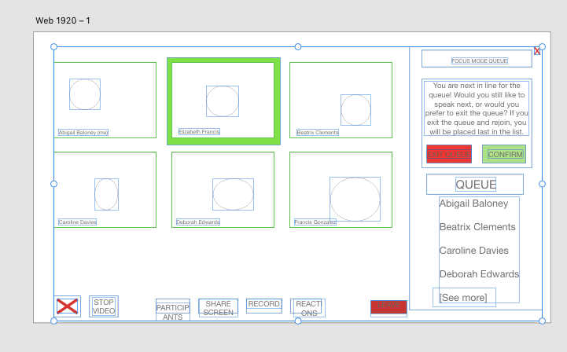

A. User Experience Requirements
1. Decompose proposed solution into user stories
User Story 1:User Story: As a meeting host, I want to be able to activate Focus Mode so that the meeting participants can engage in a flowing discussion.
Justification: This user story is relevant to our proposed solution. While we believe that Focus Mode is a very helpful feature, it does not need to be activated perpetually. There are situations where it would be more or less advantageous to use the feature, and this use case allows the meeting host to toggle it at their discretion.
Evidence: Whenever the host wants everyone to be part of the discussion, it should be in an orderly manner because [1] Study reveals that speech and its components like … and turn taking skills are beneficial and effective for comprehension of any interaction. Speaking skills and turn taking remain very important and useful as long as human communication is involved.
User Story 2:User Story: As a meeting host, I want to be able to end a meeting participant’s turn when they are finished talking so that if they forget to press on “finish speaking”, we can move along the queue.
Justification: This user story is relevant to our proposed solution. While Focus Mode is meant to flow in a way that guides a simulated flowing conversation, it requires the meeting participants to be paying attention to work as fully intended. However, it is unrealistic to believe that meeting participants will always be giving the meeting their full attention. Therefore, the meeting host’s ability to move to the next participant in the queue gives them more control over the flow of the conversation.
Evidence: (Status Quo) Like many other virtual meeting platforms such as Skype and Microsoft Teams, the host has the ability to mute or remove participants from the meeting. Therefore, the host should also be allowed to remove participants from the Focus Queue.
User Story 3:User Story: As a meeting participant, I would like to see the people in the queue so that I know who is speaking next and how long until I am able to speak.
Justification: This user story is relevant to our proposed solution. Meeting participants should be able to know how soon they will be able to speak so that they can be prepared for their turn.
Evidence: (Status Quo) Like any platform that has a queue function, the user will typically be able to access the queue list.
User Story 4:User Story: As a meeting participant, I want to join the speaking queue so that I can contribute to the conversation.
Justification: This user story is relevant to our proposed solution. This is the main feature of Focus Mode, and gives meeting participants a clear way to engage and join the conversation
Evidence: (Status Quo) Like any platform that has a queue function, the user should be able to add to the queue.
User Story 5:User Story: As a meeting participant, I want to be able to remove myself from the speaking queue so that I do not have to speak if I do not want to.
Justification: This user story is relevant to our proposed solution. Users may accidentally join the queue, or join the queue and realize that they no longer want to contribute to the conversation. There needs to be a clear way for meeting participants to leave the queue.
Evidence: (Status Quo) Like any interface that has a queue function, the user should be able to delete from the queue.
User Story 6:User Story: As a meeting participant, I want to be notified before I am up to speak so that I can be ready to contribute to the conversation.
Justification: This user story is relevant to our proposed solution. Users may be distracted and not be paying attention when their turn is coming up. Having a notification pop up will remind them their turn is coming up and that they should be prepared to speak soon.
Evidence: Like any interface that has pop up notifications, it is effective in grabbing the users attention. [2] Update notification would be ideal - that is, a notification that grabs the user's attention through both visual and auditory means, and that is overlayed on top of everything currently on-screen.
User Story 7:User Story: As a meeting participant, I want to have a button to end my turn so that the next person in the queue can speak.
Justification: This user story is relevant to our proposed solution. After the user is done presenting, the user should have an action (such as clicking on end turn) to indicate that their turn is over instead of waiting for the host to end it for them.
Evidence: (Status Quo) Like any platform that has a queue function, the user should be able to delete from the queue.
User Story 8:User Story: As a meeting participant, I want to be able to type in the chat box so that I can contribute to the conversation even when it is not my turn to speak.
Justification: This user story is not relevant to our proposed solution. This feature is already implemented in Zoom and most other popular video chat platforms.
2. Which user stories are most relevant to your proposed solution and why?
We have decided that user stories 1-7 are most relevant (justification/evidence above)
B. Ideation and Preliminary Designs
Wireframe 1
Click to Download Wireframe 1
Wireframe 2
Click to Download Wireframe 2
Wireframe 3
Click to Download Wireframe 3
Wireframe 4
Click to Download Wireframe 4
C. Detailed Designs
We chose wireframe 4 as the best design and decided to create our mockup based off of that
Justification
- Allows easy access to both Focus Mode and Chat in the side panel
- Gives a clear signifier for the meeting host to end a speaker’s turn
- Clearly notifies a user when their turn to speak is approaching
- Clear signifier to the meeting host for how to enable and disable Focus Mode
- Clearly shows the order of the queue
Mockup

Click to Download Mockup
Justifications: List of design features
-
Meeting Host:
-
Start and End Focus Mode Button
- Justification: We need a button in a familiar spot where the host can activate focus mode
-
Button to remove a participant from queue (current or later speaker)
- Justification: We gave the host the ability to remove participants from the queue or end the current speakers turn in case someone is away from their computer or holding up the meeting
-
Start and End Focus Mode Button
-
Meeting Participant:
-
Mute/Unmute button is disabled
- Justification: Mute button is disabled because the whole purpose of focus mode is interruption free discussion
-
Mute/Unmute button is disabled
-
Both Host and Participant:
-
Queue List
- Justification: We put the queue list as a pop-out to the right of the Zoom meeting so it would be easily seen, not interrupt the main meeting interface, and in a familiar position since the chat and participants list both pop-out to the right also
-
Signifier at the top that you are in Focus Mode
- Justification: We added the sentence “Focus Mode Enabled” at the top so that everyone in the meeting has a signifier and knows they are in focus mode
-
Enter Queue/Leave Queue button
- Justification: There needs to be a button to enter the queue so you can speak. We also added a leave queue button so you can drop from the queue interruption free if you do not need to say anything anymore
-
Confirmation when it is your turn to speak
- Justification: We decided it would be best to have a pop-up when you are next to speak so your attention will be focused if you are not looking and you will be prepared to speak without hesitation
-
Queue List
Works Cited
[1] Osuchukwu, Caroline Nonye, et al. Teaching Speaking Skills and the Rule of Turn Taking
For Effective Communication: A Pragmatic Approach., vol. 24, no. 12, ser. 3, Dec. 2019,
pp. 78–83. 3, doi:10.9790/0837-2412037883.
[2] Emmanuel FiguerolaEmmanuel Figuerola 19311 silver badge44 bronze badges, et al.
“Web App - How to Grab the User's Attention No Matter What! (Notifications).” User
Experience Stack Exchange, 1 Nov. 1962,
ux.stackexchange.com/questions/44478/web-app-how-to-grab-the-users-attention-no-m
atter-what-notifications.